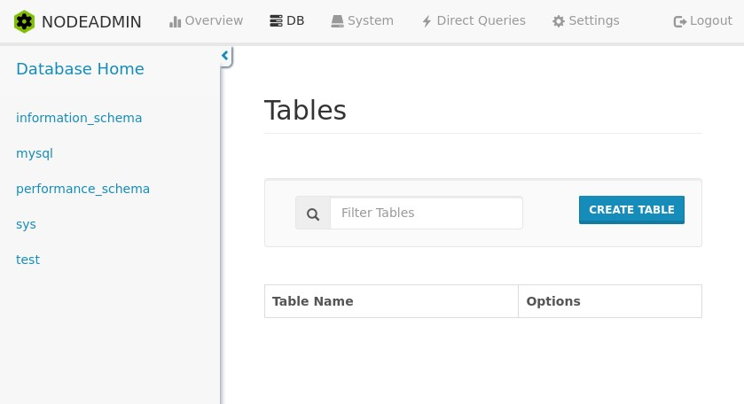
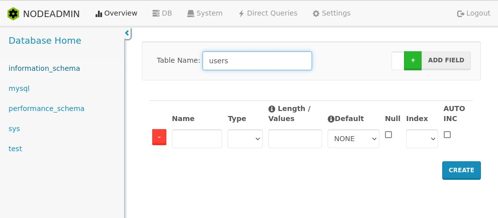
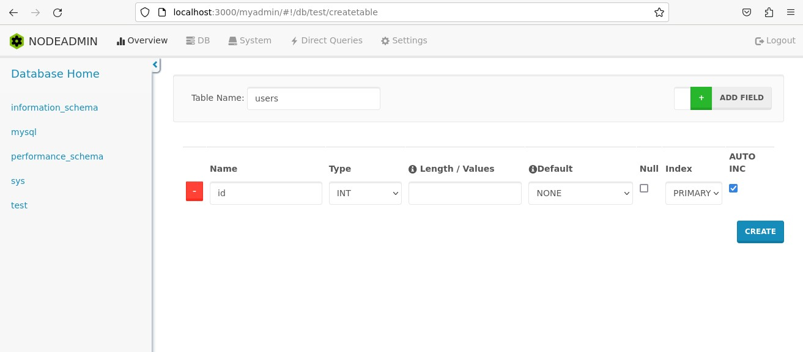
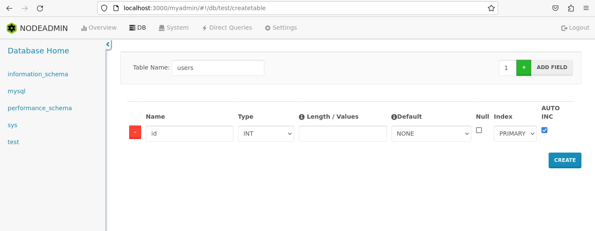
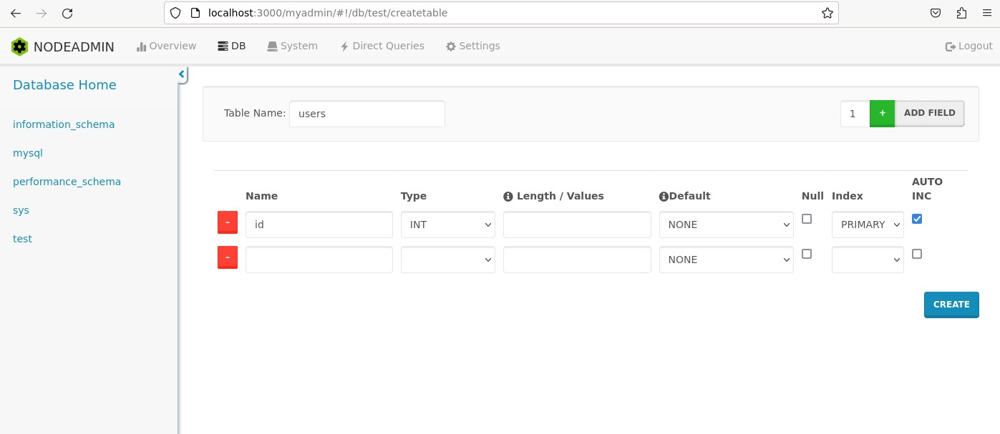
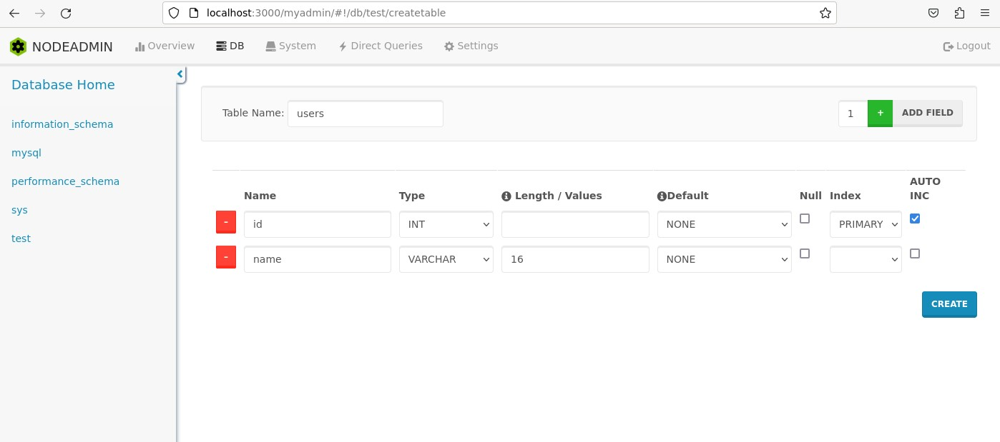
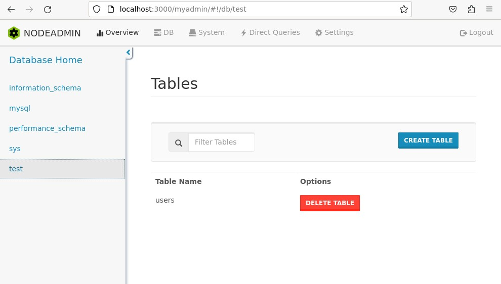

Создание таблицы в БД через Node MySQL Admin
А теперь давайте создадим в нашей базе данных
test таблицу users. Кликните
по имени test в левом сайдбаре, чтобы
перейти в эту БД. Далее нажимаем на
кнопку CREATE Table:

Теперь нам откроется окошко со структурой таблицы, в котором можно назначить имя и тип данных для полей:

NMA не позволяет создать пустую таблицу,
поэтому давайте заполним первое поле
таблицы. Пусть таким полем будет
id. В выпадающем списке Type
выбираем числовой тип INT:

Далее в выпадающем списке Index
выбираем числовой тип PRIMARY.
Также ставим галочку в колонке AUTO INC,
чтобы значения id задавались в таблице
автоматически:
Давайте добавим еще несколько полей в таблицу.
Для этого переходим к кнопке
ADD FIELD и слева от нее в поле
указываем число нужных полей. Например,
давайте добавим одно поле, после
чего нажмем на кнопку
ADD FIELD:

Теперь появилось новое поле:

Давайте зададим полю имя name. Назначим ему
тип VARCHAR с длиной в 16
символов:

Теперь нажимаем на кнопку CREATE,
чтобы подтвердить создание
таблицы:
На странице нашей ДБ появилась новая
таблица users:

В БД создайте таблицу users.
Пусть в этой таблице будет 3 поля (столбца):
id, тип integer, name,
тип varchar, 32 символа, age,
тип integer.